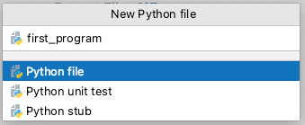
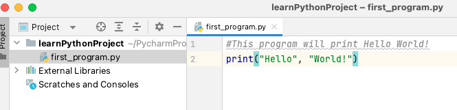
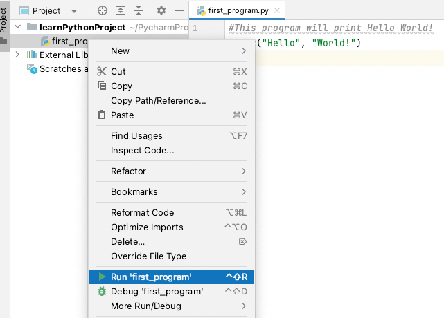
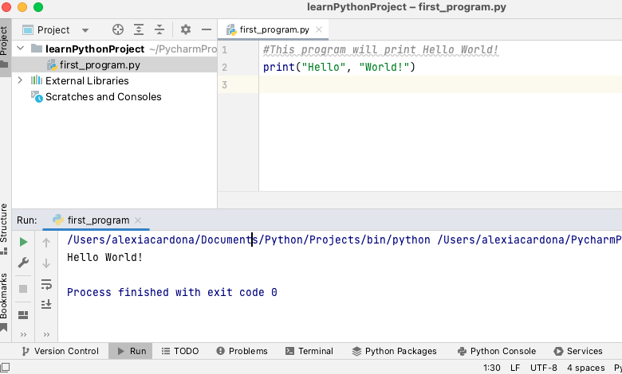
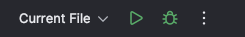
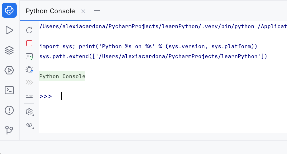

Creating and running Python files#
We will start learning Python by writing the classic “Hello World!” program which is normally the first thing you learn in any classic programming textbook.
Select File|New|Python file from the menu.
Write the name of the Python file in the field provided (in this example we will be using the name
first_program).

PyCharm creates a source code pane to edit the file
first_program.py. Note: A python file has an extension of.py. Write the code below in thefirst_program.pyfile:
Run the Python file
first_programin PyCharm by right-clicking on the file in the Project pane, and select Run ‘first_program’ from the menu. If you want to use the keyboard to run the code, use the shortcut shown next to the Run ‘first_program’ menu. For mac this is ^ Shift R buttons.
The output of
first_program.pyis displayed in the Run tool window at the bottom of PyCharm’s screen.
You can also run
first_programin PyCharm by clicking on the run button present in the top menu of the PyCharm window.
Python programs are executed by the Python interpreter. Python starts executing each line of code in a file, starting
from the first one and progressing line by line to the very end of the file. Now let’s look at the code in
first_program.py. The first line is a comment.
Programming concept
Comments are non-executable line of code that are used to explain Python code. A comment starts a line of code with a # and continues till the end of that line.
The second line uses the print() function to output the text Hello World!.
To run a Python file outside PyCharm, in a command line, use the following code:
\(python\) \(<name\) \(of\) \(Python\) \(file>\)
# to run first_program.py use the code
python first_program.py
Python Console#
You can interact with the Python interpreter via the Python Console pane at the bottom of PyCharm’s screen (as shown below).

The console displays >>> to indicate that it is expecting a command as an input. After writing the command, pressing
the <Enter> key will execute the command. The output of the command is then displayed in the console.
A good way to use the Python Console is to use it as a calculator. Below are some of the most used mathematical operations.
Operator/Function |
Description |
Example |
|---|---|---|
+ |
Addition |
1 + 2 returns 3 |
- |
Subtraction |
3 - 1 returns 2 |
* |
Multiplication |
3 * 4 returns 12 |
/ |
Division |
4/2 returns 2.0 |
// |
Floor division: returns the integer part of a division result (without the fraction part) |
5//3 returns 1 |
% |
Remainder |
5 % 2 returns 2 |
** |
to the power of |
3 ** 2 returns 9 |
|
x to the power of y (same as **) |
|
|
absolute value of x |
|
|
rounds x to n decimal places |
|
Python follows the traditional mathematical rules of precedence (BODMAS). You can find more about these rules here.
Exercise 1 (Arithmetic Operators)
Level:
Try the examples in Numeric Operators and Functions in the Python Console.